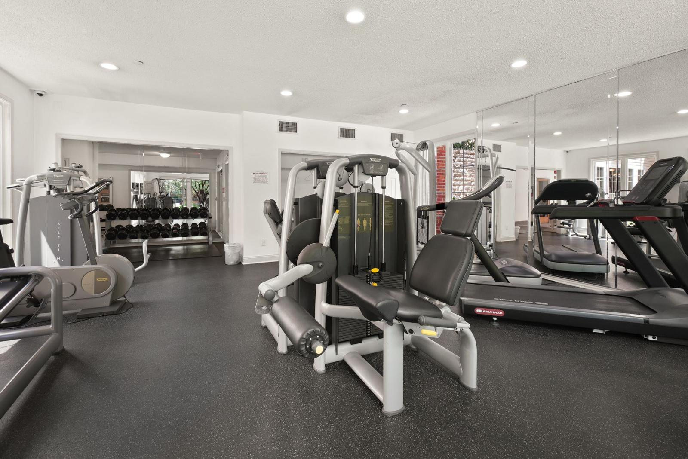
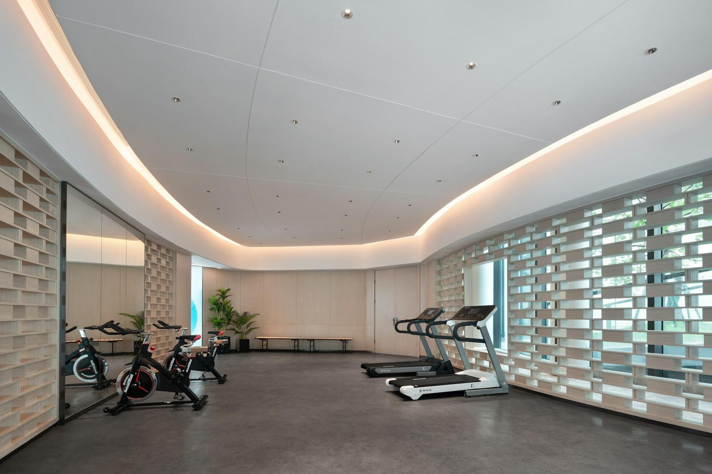
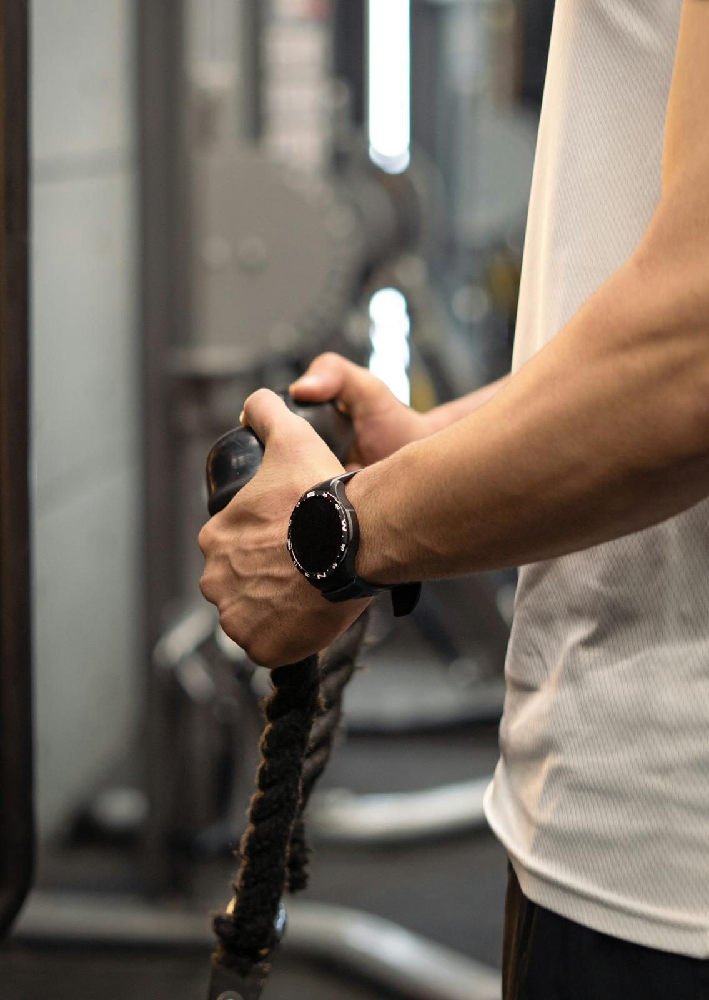

Geräteblick
Nie wieder neben
dem Gerät warten.
Sieh, welches Gerät frei ist. Stell dich digital an. Die App sagt dir, wann du dran bist.

Drei Schritte. Kein Warten.

Sehen, was frei ist. Jedes Gerät auf einen Blick, mit Karte.

Digital anstellen. Kein Herumstehen. Du siehst deine Wartezeit.

Gerufen werden. Wenn du dran bist, meldet sich die App.
Überall dabei.
Am Handy
Im Studio, beim Training.
Am Rechner
Geräte und Karte nebeneinander. Ansehen
Per QR-Code
Am Gerät scannen und loslegen.